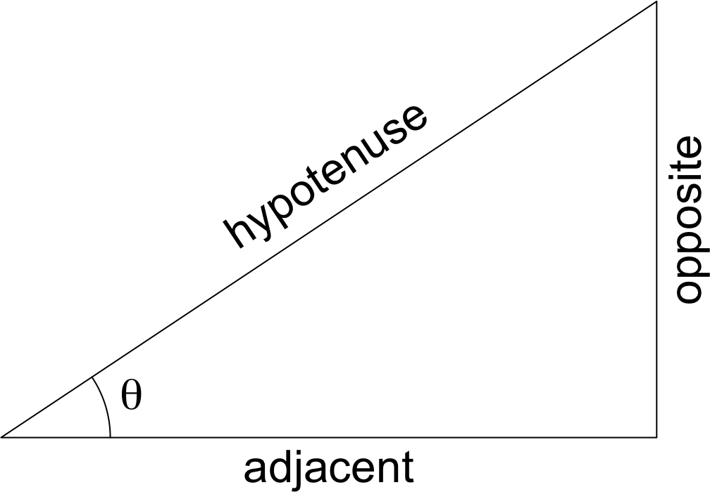

Review/Prerequisite
This chapter summarizes what you are expected to know before reading this minibook, or take pre-calculus 12.
0.1 Sets
0.1.1 Introduction and Definition
Definition 0.1 A set is a collection of different objects, called elements of the set. Usually, sets are denoted by capital letters such as \(A\), \(B\), etc. The elements of a set can be numbers or other objects such as vectors, functions, other sets, etc. We write \(a \in A\) if the set \(A\) contains the element \(a\), and we read “\(a \in A\)” as “\(\boldsymbol{a}\) is an element of \(\boldsymbol{A}\).”
The empty set is the set with no element, denoted as \(\varnothing\).
A set can have finitely many elements, called a finite set, or infinitely many elements, called an infinite set.
Example 0.1 \(A = \{\text{red},\, \text{green},\, \text{blue}\}\), \(B = \{1,\,2,\,3,\,4,\,5\}\), and \(C = \{1,\,2,\,3,\,\dots\}\) are all examples of sets. Here, \(A\) and \(B\) are finite sets, and \(C\) is an infinite set.
The set \(A\) has 3 elements, red, green, and blue. So, \(\text{red} \in A\), \(\text{green} \in A\), and \(\text{blue} \in A\). Similarly, \(1 \in B\), \(2 \in B\), etc.
In this minibook, we will only see sets with numerical elements.
0.1.2 Notations
To define a set, we can list the elements one by one or describe the elements in words and/or math. The methods of defining a set are summarized as follows:
Roster Notation/Enumeration Notation (Listing the elements)
All the three sets in Example 0.1 are defined under the roster notation.Semantic Notation/Statement Notation (Describing the properties of the elements in words)
Example 0.2 \(D\) is the set of all positive integers less than 100; \(E\) is the set of all students in my pre-calculus 12 class.
Set Builder Notation (Describing the properties of the elements in math and/or words)
State the symbol to be described on the left side of “\(\,\mid\,\)” or “\(\,:\,\)” then describe the symbol on the right side.Example 0.3 The following sets are defined using the set builder notation: \[\begin{align*} F &= \{x \mid x \in D \text{ and $x$ is a multiple of } 2\} = \{x \in D \mid x \text{ is a multiple of } 10\}\\ G &= \{n \mid n^2 \in D\}\\ H &= \{x^2 \mid x \in B\} = \{x \mid x = b^2 \text{ for some } b \in B\} \end{align*}\]
See the roster notation of the sets \(F,\,G,\,H\) to check your understanding
\[\begin{align*} F &= \{10,\, 20,\, \dots,\, 90\}\\ G &= \{1,\, 2,\, 3,\, \dots,\, 9\}\\ H &= \{1,\, 4,\, 9,\, 16,\, 25\} \end{align*}\]Interval Notation (only for sets of connected real numbers)
An interval is written as two numbers separated by a comma, surrounded by round or square bracket The smaller of the two numbers is always on the left. The interval is the set of all real numbers between these two numbers, with each of the two numbers themselves included if a square bracket is used, or excluded if a round bracket (parenthesis) is used. The two numbers are called the endpoints of the interval.Example 0.4 The following intervals are described in set builder notation. \[\begin{align*} I_1 &= (1,\, 3) = \{x \in \mathbb{R} \mid 1 < x < 3\}\\ I_2 &= [-2,\, 2] = \{x \in \mathbb{R} \mid -2 \le x \le 2\}\\ I_3 &= [0,\, 5) = \{x \in \mathbb{R} \mid 0 \le x < 5\}\\ I_4 &= (0,\, 5] = \{x \in \mathbb{R} \mid 0 < x \le 5\} . \end{align*}\]
An interval is open if both the two endpoints are excluded in the interval, such as \(I_1\); an interval is closed if both the two endpoints are included, such as \(I_2\); an interval is half-open if exactly one endpoint is included, such as \(I_3\) (right-opened) and \(I_4\) (left-open).
Example 0.5 An interval can be bounded on only one side: \[\begin{align*} I_5 &= (-1,\, \infty) = \{x \in \mathbb{R} \mid x > -1\}\\ I_6 &= (-\infty,\, 3] = \{x \in \mathbb{R} \mid x \le 3\} . \end{align*}\]
Note that the symbol \(\infty\), which means infinity, is not a number and thus can never be included in an interval.
0.1.3 Subset
Definition 0.2 We say the set \(P\) is a subset of the set \(Q\) (written as \(P \subseteq Q\)) if all elements in \(P\) are also in \(Q\).
Example 0.6 Recall from Example 0.1, \(B = \{1,\, 2,\, 3,\, 4,\, 5\}\) and \(C = \{1,\, 2,\, 3,\, \dots\}\). All elements in \(B\) are in \(C\), so \(B \subseteq C\).
Example 0.7 Recall from Example 0.2, \(D = \{1,\, 2,\, \dots,\, 99\}\), and from Example 0.3, \(F = \{10,\, 20,\, \dots,\, 90\}\) and \(G = \{1,\, 2,\, \dots,\, 9\}\). Both \(F\) and \(G\) are subsets of \(D\).
Example 0.8 By definition, every set is a subset of itself. Also, the empty set \(\varnothing\) is a subset of every set.
0.1.4 Basic Set Operations
0.1.4.1 Union of two sets
Definition 0.3 The union of the sets \(P\) and \(Q\) (denoted as \(P \cup Q\)) is the set containing all the elements in either or both \(P\) and \(Q\).
Example 0.9 Let’s start from the union of some simple sets: \[\begin{align*} & \{1,\, 2,\, 3\} \cup \{1,\, 3,\, 5,\, 7\} = \{1,\, 2,\, 3,\, 5,\, 7\} \\ & \{2,\, 4\} \cup \{10\} = \{2,\, 4,\, 10\} \\ & \{3,\, 6,\, 9\} \cup \{3,\, 6,\, 9\} = \{3,\, 6,\, 9\} . \end{align*}\]
Example 0.10 The union of intervals will appear frequently in this minibook, such as \[\begin{align*} & (-\infty,\, 0] \cup [2,\, 5] = \{x \in \mathbb{R} \mid x \le 0 \text{ or } 2 \le x \le 5\} \\ & (-\infty,\, 3) \cup (3,\, \infty) = \{x \in \mathbb{R} \mid x \ne 3\} . \end{align*}\]
0.1.4.2 Intersection of two sets
Definition 0.4 The intersection of the sets \(P\) and \(Q\) (denoted as \(P \cap Q\)) is the set containing only the elements in both \(P\) and \(Q\).
Example 0.11 Let’s work with the same simple sets as above: \[\begin{align*} & \{1,\, 2,\, 3\} \cap \{1,\, 3,\, 5,\, 7\} = \{1,\, 3\} \\ & \{2,\, 4\} \cap \{10\} = \varnothing \\ & \{3,\, 6,\, 9\} \cap \{3,\, 6,\, 9\} = \{3,\, 6,\, 9\} . \end{align*}\]
0.1.4.3 Difference of two sets
Definition 0.5 The difference of the sets \(P\) and \(Q\) (denoted as \(P \setminus Q\) or \(P - Q\)) is the set containing the elements in \(P\) that are not in \(Q\).
Example 0.12 Let’s work with the same simple sets again: \[\begin{align*} & \{1,\, 2,\, 3\} \setminus \{1,\, 3,\, 5,\, 7\} = \{2\} \\ & \{2,\, 4\} \setminus \{10\} = \{2,\, 4\} \\ & \{3,\, 6,\, 9\} \setminus \{3,\, 6,\, 9\} = \varnothing . \end{align*}\]
0.1.5 Common Number Sets
We will be frequently using these sets in this minibook:
- The set of natural numbers \(\mathbb{N} = \{1,\, 2,\, 3,\, \dots\}\) includes all positive integers (some texts include \(0\) in \(\mathbb{N}\)).
- The set of integers \(\mathbb{Z} = \{\dots,\, -2,\, -1,\, 0,\, 1,\, 2,\, \dots\}\).
- The set of rational numbers \(\displaystyle\mathbb{Q} = \left\{\left.\frac{a}{b}\,\right\vert\, a,b \in \mathbb{Z} \text{ and } b \ne 0 \right\}\) includes all integers and fractions of integers.
- The set of real numbers \(\mathbb{R}\) includes all the numbers on a continuous number line. This includes rational and irrational numbers (all numbers that we have learned until know are real numbers).
It might be worth nothing that \(\mathbb{N} \subseteq \mathbb{Z} \subseteq \mathbb{Q} \subseteq \mathbb{R}\).
0.2 Operations
0.2.1 Types of operations
Addition, subtraction, multiplication, and division.
Exponentiation, including with negative and fractional exponents
Identities/laws of exponents:
- \(a^{m+n} = a^m \cdot a^n\);
- \(a^{m-n} = \displaystyle\frac{a^m}{a^n}\), where \(a \ne 0\);
- \(\left(a^m\right)^n = a^{mn} = \left(a^n\right)^m\);
- \((ab)^m = a^mb^m\), and \(\displaystyle\left(\frac{a}{b}\right)^m = \frac{a^m}{b^m}\), where \(b \ne 0\);
- \(a^0 = 1\) whenever \(a \ne 0\) (what is \(0^0\)?).
Converting a negative exponent: \[a^{-m} = \frac{1}{a^m} .\]
Example 0.13 Rewrite the following without a negative exponent: (a) \(a^{-1}\); (b) \(3x^{-1}y\); (c) \(\displaystyle \frac{2u}{3v^{-2}}\).
Solutions
- \(\displaystyle a^{-1} = \frac{1}{a}\);
- \(\displaystyle 3x^{-1}y = 3y \cdot x^{-1} = 3y \cdot \frac{1}{x} = \frac{3y}{x}\);
- \(\displaystyle \frac{2u}{3v^{-2}} = \frac{2u}{3} \cdot \frac{1}{v^{-2}} = \frac{2u}{3} \cdot v^2 = \frac{2uv^2}{3}\).
Convert a fractional exponent: \[a^{\frac{m}{n}} = \sqrt[n]{a^m} = \left(\sqrt[n]{a}\right)^m .\]
Example 0.14 Rewrite the following without a fractional exponent: (a) \(a^{\frac{1}{2}}\); (b) \(25^{\frac{3}{2}}\); (c) \(\displaystyle \left(\frac{u}{v^2}\right)^\frac{1}{3}\).
Solutions
- \(\displaystyle a^{\frac{1}{2}} = \sqrt{a}\);
- \(\displaystyle 25^{\frac{3}{2}} = \left(\sqrt{25}\right)^3 = 5^3 = 125\) (Why do we not write \(\sqrt{25^3}\) instead?);
- \(\displaystyle \left(\frac{u}{v^2}\right)^\frac{1}{3} = \frac{u^\frac{1}{3}}{v^\frac{2}{3}} = \frac{\sqrt[3]{u}}{\sqrt[3]{v^2}}\).
Converting a negative fractional exponent: \[a^{-\frac{m}{n}} = \frac{1}{\sqrt[n]{a^m}} = \frac{1}{\left(\sqrt[n]{a}\right)^m}\]
Example 0.15 Rewrite the following single powers so that the results only contain positive integer exponents: (a) \(5a^{-\frac{3}{2}}\); (b) \(\displaystyle \frac{1}{2}x^{-\frac{1}{3}}\); (c) \(-3x^{-\frac{2}{3}}\).
Solutions
- \(\displaystyle 5a^{-\frac{3}{2}} = \frac{5}{a^{\frac{3}{2}}} = \frac{5}{\sqrt{a^3}}\);
- \(\displaystyle \frac{1}{2}x^{-\frac{1}{3}} = \frac{1}{2x^\frac{1}{3}} = \frac{1}{2\, \sqrt[3]{x}}\);
- \(\displaystyle -3x^{-\frac{2}{3}} = -\frac{3}{x^\frac{2}{3}} = -\frac{3}{\sqrt[3]{x^2}}\).
You should be able to evaluate/simplify expressions like this:
Example 0.16 Evaluate \(\displaystyle \frac{27^{\frac{2}{3}}}{16^{\frac{5}{4}} \times 36^{-\frac{1}{2}}} \times \left(\frac{3}{2}\right)^{-3}\).
Solution
\[\begin{align*} \frac{27^{\frac{2}{3}}}{16^{\frac{5}{4}} \times 36^{-\frac{1}{2}}} \times \left(\frac{3}{2}\right)^{-3} &= \frac{27^{\frac{2}{3}} \times 36^{\frac{1}{2}}}{16^{\frac{5}{4}}} \times \left(\frac{2}{3}\right)^{3} \\ &= \frac{\left(\sqrt[3]{27}\right)^2 \times \sqrt{36}}{\left(\sqrt[4]{16}\right)^5} \times \frac{2^3}{3^3} \\ &= \frac{3^2 \times 6}{2^5} \times \frac{2^3}{3^3} \\ &= \frac{3^2 \times (2 \times 3) \times 2^3}{2^5 \times 3^3} \\ &= \frac{3^3 \times 2^4}{2^5 \times 3^3} \\ &= \frac{1}{2} . \end{align*}\]
Absolute Value
The absolute value of a real number is “the number without its sign.” That is to say, for a real number \(x\), its absolute value \(\lvert x \rvert\) is
- \(x\) itself if \(x \ge 0\), or
- \(-x\) if \(x<0\) (so that \(-x>0\) is indeed positive).
Definition 0.6 Let \(x \in \mathbb{R}\). As described above, the absolute value of \(x\), denoted as \(\lvert x \rvert\), is defined as \[\lvert x \rvert = \begin{cases}x,\quad &\text{if } x \ge 0 \\ -x,\quad &\text{if } x < 0 \end{cases} .\]
Basic Trigonometry
The three trigonometric ratios, sine (\(\sin\)), cosine (\(\cos\)), and tangent (\(\tan\)), of angles between \(0^\circ\) and \(90^\circ\).
\(\displaystyle \sin\theta = \frac{\mathrm{opp}}{\mathrm{hyp}}\)
\(\displaystyle \cos\theta = \frac{\mathrm{adj}}{\mathrm{hyp}}\)
\(\displaystyle \tan\theta = \frac{\mathrm{opp}}{\mathrm{adj}}\)

The three trigonometric ratios of any angles, using the idea of the unit circle.